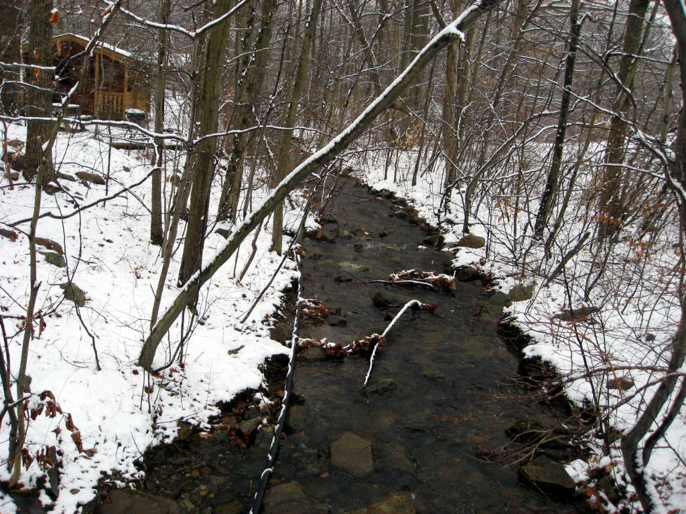
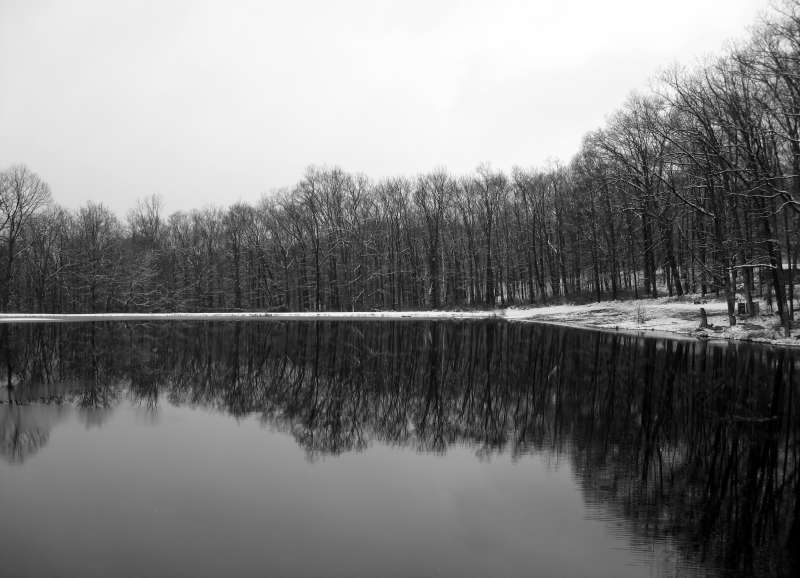
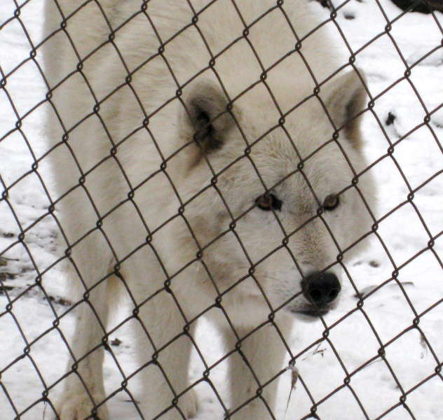

Lakota Wolf Preserve in the Winter

There's some signs of life around the wolf preserve, living along this snow-lined stream.

Here's a mirror-like lake we passed on our way to the wolves, turned black and white for that artsy touch.
Here is an arctic wolf. See his mean-looking eyes staring at me.

What-choo-talkin' bout, Willis?
The wolf decides he doesn't care and STRRREEETCCCHHHES happily, letting me live.
Two tundra wolves, decidedly buddies.

A pair of timber wolves. The one on the right is taken by surprise as its jabbed with a wolf nose.
They end up in a festive lickfest. From what I hear, one wolf, is going up to the other and requesting a regurgitation of food. The needy wolf is 8 years old, and thus way too old to be doing that.
More timber wolves arrive from the depths of the preserve, wanting some grub.
Grub, here, now.
This timber wolf looks even hungrier.
The wolves are fed immediately. Wolves in this preserve get much better service than humans get in restaurants, yet never leave tips.
There was an interesting story they told about how a red fox can get rid of fleas. They've been known to carry a stick as they walk slowly out into the water, giving fleas a chance to climb up to dry fur. They point their noses up, still biting the stick, immersing themselves gradually down. The fleas make their way to the fox's nose. They get grumpy about the cramped accomodations, proceeding to spread out across the stick. A fox then lets the stick go and waves farewell at the fleas with its paw. Okay, I made the waving part up, but the rest is true.
Of course, these tykes are speedy devils. You don't understand how difficult it was to take this picture. By the time the shutter button was pressed all the way down, the fox was already driving off with my car.
This is a red fox. You can imagine how confused this fox is. You apparently can tell its a red fox by the white tip of the tail, which you can't see in any of my pictures. You'll just have to trust me.
No matter what the color, foxes are all up for a good meal. They're also very cuddly, for a wild animal that is.
Bobcats are not as cuddly. They're cold and calculating.
Perhaps this is because of all the snow they eat.
Back